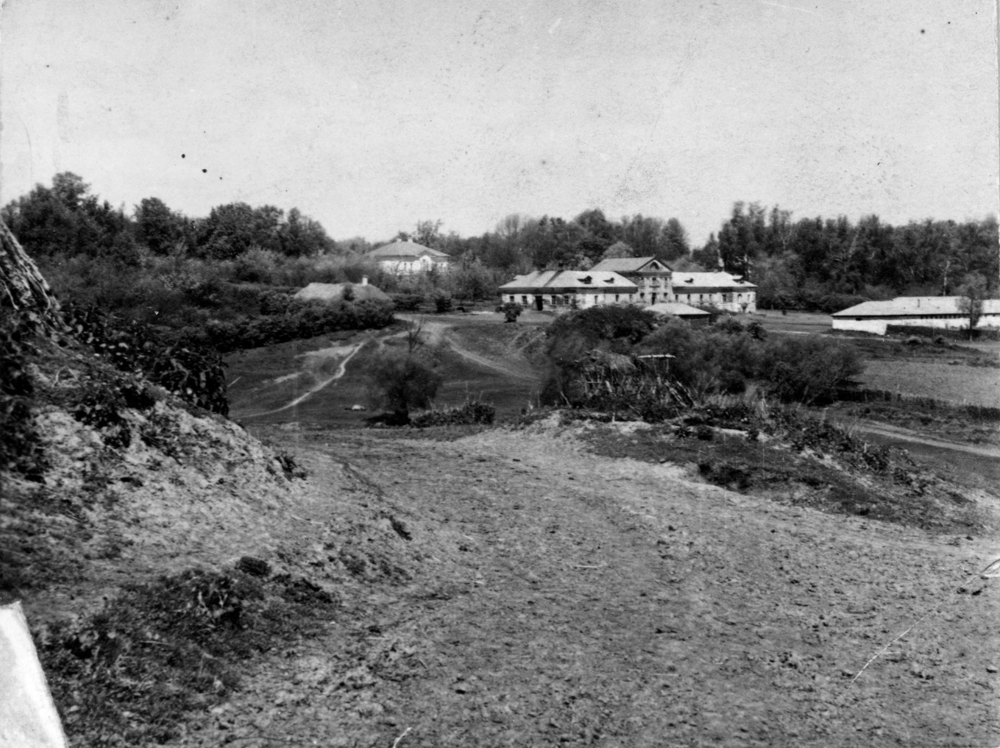
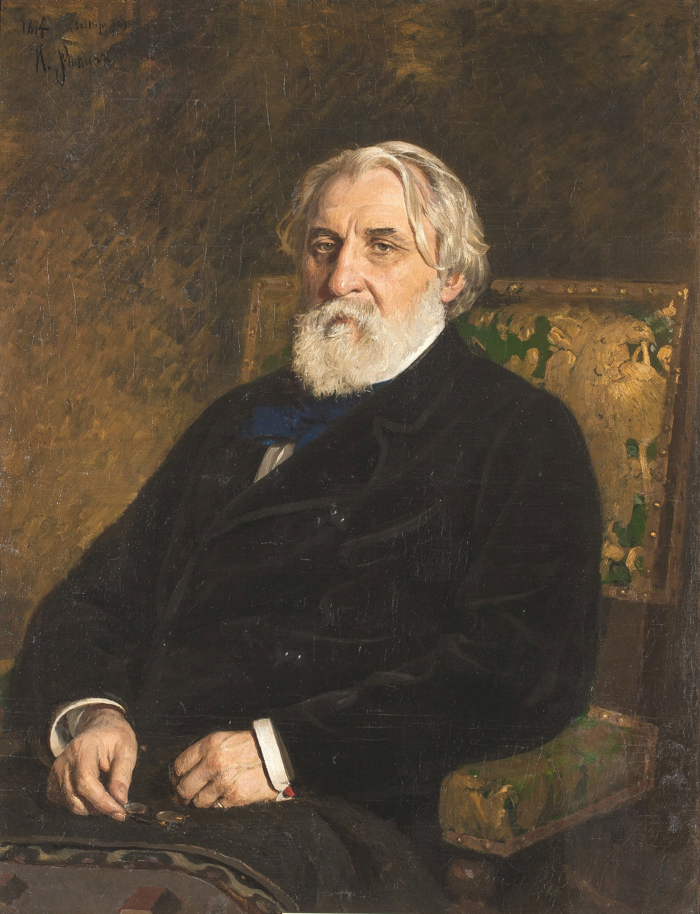
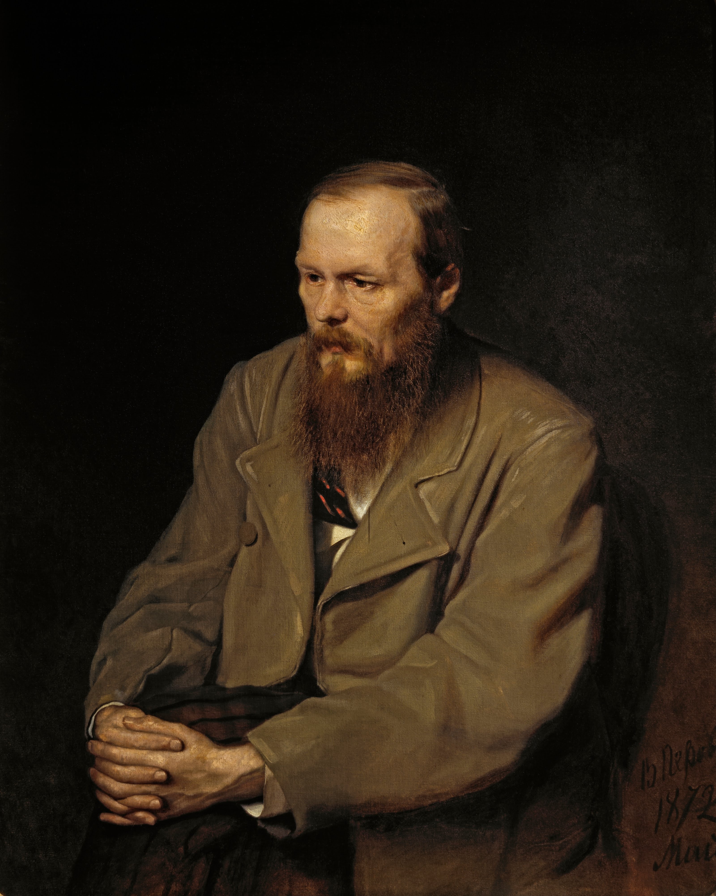
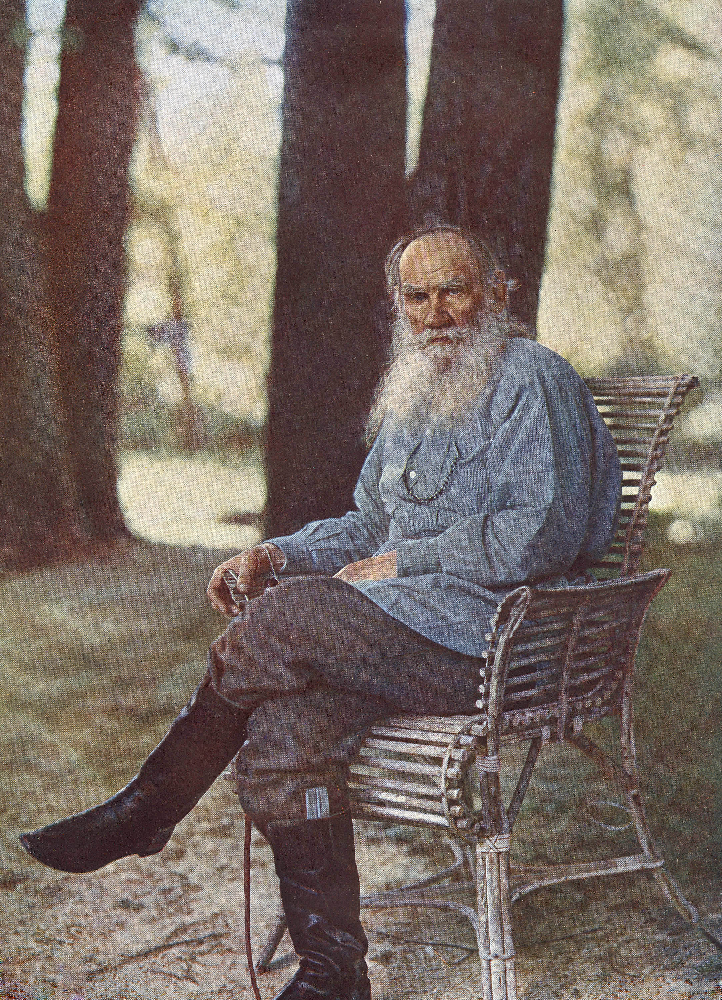

Thursday · Literature
(c. 1850s–1880s): Emancipation-era novels, , and the quarrel over what literature was for
From 's (1852) through the (1861) and into the great novels of and Tolstoy, Russian writers turned prose fiction into a public argument about social reform, moral responsibility, and what counted as truth. is a later teaching label for several decades of print culture that also included 's radical criticism, 's editor-poet work at , 's theater, and women writers whose work early Soviet canonization often sidelined. The era runs roughly from the through the early 1880s deaths of (1881) and (1883).

{kind=link}
is a period label applied retrospectively by critics, teachers, and later Soviet literary historians. The writers themselves used different terms: (), physiological sketch, socially engaged literature, and later radical criticism versus art for art's sake. The dates here run roughly from the (1853–56) and the reform debates of the late 1850s through the (1861) and into the early 1880s when (1881) and (1883) died. Tolstoy lived until 1910 but his major realist novels were complete by the late 1870s. The writers did not share one aesthetic or political program: 's liberal gradualism, 's revolutionary materialism, 's religious conservatism after Siberia, and Tolstoy's later Christian anarchism were competing answers to the same question: what is literature for in a society with , censorship, and unfinished modernity? Women writers — , , Avdotya Panaeva — were active and published in ; male-centered Soviet canonization long treated them as minor. The elsewhere section names contemporaneous mid-Victorian English fiction, French moving toward naturalism, Meiji Japan's early modern print, and late Qing fiction as concrete parallel literary worlds — not as a forced West-plus-Asia formula. Romanticism and existentialism are earlier Capsules literature lessons and are not repeated here.
Select any words, or tap a dotted term.
- 1842–52 Natural school; Belinsky's criticism 's critical essays in (Отечественные записки / Fatherland Notes, / ) champion social engagement and realistic portrayal of ordinary life. Dead Souls (1842) by is a satirical prose poem; later critics retroactively call 's style a bridge to . begins publishing in (1847–51; book 1852) — rural stories that implicitly criticize .
- 1853–56 Crimean War; Tolstoy's Sevastopol Sketches Russia fights the against Ottoman Empire, Britain, and France. Defeat exposes bureaucratic rot and prompts reform debates. Tolstoy serves as artillery officer and publishes (1855–56) — war reportage without heroic gloss. The sketches make him famous before his novels.
- 1857–61 Reform debates; journals as public sphere 's government prepares Emancipation. — (edited by and ), ( / , edited by ) — become the main public forums for literary and political argument. Censorship is real but looser than under Nicholas I. 's novel (1859) diagnoses Russian lethargy.
- 1861 Emancipation Manifesto signs the on 3 March 1861 (Julian calendar 19 February). Former serfs gain legal freedom but land terms are complex and often punitive. The reform is a historic rupture and a literary watershed: had been the moral scandal anchoring realist fiction. Post-Emancipation, writers ask what freedom means when poverty, illiteracy, and autocracy remain.
- 1862 Fathers and Sons; the nihilist debate publishes in . The novel's protagonist is a materialist who rejects Romantic idealism and gentry culture. Conservative and radical readers both attack for different reasons; the word enters public vocabulary as both insult and badge. The generational conflict (1840s liberals versus 1860s radicals) becomes a recurring realist theme.
- 1863–64 Chernyshevsky; Dostoevsky returns writes (1863) in prison — a didactic novel proposing rational egoism, communal workshops, and the new woman as revolutionary program. , back from Siberian exile and penal battalion, launches the journals Time (Время) and Epoch (Эпоха) and publishes (1864) — a philosophical monologue attacking utopian rationalism and arguing for irrational human freedom.
- 1865–69 War and Peace serialized Tolstoy serializes in (1865–69; revised book editions 1868, 1869, later revisions). The novel interweaves Napoleonic Wars history with aristocratic family plots and philosophical essays on historical causation. It is long, digressive, and self-invented — not a realist novel in the French physiological-sketch sense but a new hybrid form.
- 1866 Crime and Punishment publishes in (serialized 1866). murders a pawnbroker to test his theory that extraordinary men stand above moral law; guilt, confession, and redemption through suffering follow. The novel is psychological, theological, and formally strange — realist detail serving metaphysical argument.
- 1868–77 Ostrovsky's plays; Anna Karenina produces dozens of plays at Moscow's Maly Theatre depicting merchants, clerks, and provincial life — realistic social comedy and drama that make theater a middle-class public institution. Tolstoy serializes in (1875–77; book 1878). The novel parallels Anna's adultery and suicide with Levin's search for meaning in agrarian life and family. Tolstoy's spiritual crisis begins soon after.
- 1879–80 The Brothers Karamazov serializes in (1879–80; book 1880). Three brothers and a half-brother orbit their murdered father; the chapter stages a theological argument about freedom, suffering, and faith. dies in February 1881 before starting a planned sequel. His funeral is a public event.
- 1881–83 Alexander II assassinated; era closes Radical populists assassinate on 13 March 1881 (Julian 1 March). Alexander III's repressive reign follows. dies weeks before the assassination; dies in 1883. By the mid-1880s Tolstoy has turned to religious tracts and the great realist moment is periodized as past. Younger writers ('s generation) will consolidate a different in the 1890s.
Before
Pushkin and Gogol's inheritance, serfdom, censorship, and the thick journals as public sphere
Russian literature before the 1850s had Pushkin and as recent giants, as moral scandal, censorship as structural fact, and a nascent print culture. Alexander Pushkin (1799–1837) had brought Russian into literary modernity with Eugene Onegin (1823–31) and prose tales; he founded journal in 1836. (1809–1852) wrote satirical, grotesque prose — Dead Souls (1842), The Overcoat (1842) — that 's criticism championed as socially engaged. The of the 1840s (физиологический очерк / physiological sketch) tried to document ordinary urban life with clinical detail. But the big question was still unresolved: .
— the legal bondage of millions of peasants to landowners — was the defining moral fact of Russian society. Enlightened gentry intellectuals (including , Tolstoy, and many others) knew it was indefensible. Censorship under Nicholas I (reigned 1825–55) made direct political speech dangerous, so literature became the coded public sphere. () — monthly magazines hundreds of pages long — serialized fiction, published criticism, and debated reform within the limits censors allowed. 's essays in and Fatherland Notes in the 1840s argued that literature must serve social truth, not escape into art for art's sake. His death in 1848 (tuberculosis, age thirty-six) made him a martyr for later radicals.
's began appearing in in 1847 (book edition 1852). The stories are quiet, descriptive, and radical: they show serfs as dignified human beings with inner lives, not property. The book circulated among reform-minded bureaucrats and educated readers; it helped make visible as a problem literature could address. Meanwhile Russia fought the (1853–56) against Britain, France, and the Ottoman Empire. Defeat was humiliating; it exposed bureaucratic rot and military incompetence. When took the throne in 1855, the reform debates began in earnest. Tolstoy, serving as an artillery officer at Sevastopol, published war sketches (1855–56) that showed soldiers' fear and suffering without heroic gloss. The sketches made him famous before his novels. By the late 1850s the question was not if Emancipation would happen but how.
The era
Emancipation (1861), thick journals as battleground, and the great novels of Turgenev, Dostoevsky, and Tolstoy
signed the on 3 March 1861 (Julian calendar 19 February). Former serfs gained personal freedom but land redistribution terms were punitive: redemption payments, small allotments, village commune control. The reform was a historic rupture and a disappointment. For writers, Emancipation was both victory and new question: what does freedom mean when poverty, illiteracy, autocracy, and censorship remain? The 1860s became a decade of argument conducted in , which were the only legal public sphere. (edited by and critic ) and (edited by ) serialized novels and published essays that debated materialism versus idealism, reform versus revolution, art for art's sake versus social engagement.

{kind=link}
's appeared in in 1862. The novel stages a generational conflict: Arkady Kirsanov brings his friend , a medical student and materialist , home to his gentry estate. rejects Romanticism, poetry, and liberal idealism; he believes in science, dissection, and rational self-interest. The older generation (Arkady's father and uncle) are 1840s liberals who cannot understand the new radicalism. did not endorse but he made him compelling; both conservatives (who saw as dangerous) and radicals (who thought mocked them) attacked the novel. The word entered public vocabulary as both insult and badge. dies of typhus after accidentally infecting himself during an autopsy — a tragic waste leaves unresolved.
returned from Siberian exile and penal battalion in 1859 after ten years. He had been sentenced in 1849 for involvement with the Petrashevsky Circle, a radical discussion group. Mock execution, hard labor, and service as a common soldier broke and remade him: he returned a Christian conservative who believed in suffering as redemptive and rejected utopian rationalism. He launched journals Time (Время) and Epoch (Эпоха) with his brother Mikhail; both failed financially. In 1864 he published in Epoch. The novella is a first-person monologue by the Underground Man, a spiteful ex-bureaucrat who attacks 's rational egoism (from , 1863) and argues that humans will choose irrational suffering over mechanical happiness to prove they are free. is short, strange, and philosophically dense; it announces 's mature voice.

{kind=link}
appeared in in 1866. Rodion , a poor ex-student in Petersburg, murders an old pawnbroker and her sister to test his theory that extraordinary men (Napoleon, great legislators) stand above moral law. He wants to prove he is a Napoleon, not a louse. Guilt, fever, and the compassion of Sonya, a young woman forced into prostitution, lead him toward confession and Siberian exile. The novel is claustrophobic, feverish, and theologically urgent: stages crime and redemption as a metaphysical drama, not only a social problem. Realistic detail (Petersburg slums, taverns, police stations) serves a religious argument about suffering, confession, and resurrection through Christ.
Tolstoy began serializing in in 1865 (book editions 1868, 1869, with later revisions). The novel interweaves historical narrative (Napoleon's 1812 invasion of Russia) with domestic plots (the Bezukhov, Bolkonsky, and Rostov families) and philosophical essays on historical causation. Tolstoy argues that history is made by countless small causes, not by great men's wills; Napoleon and Kutuzov (the Russian general) are as much products of events as shapers. The novel is baggy, digressive, and over a thousand pages. It is also a formal invention: neither the French physiological-sketch of Balzac nor the English multi-plot novel of Dickens quite fits. Tolstoy called it not a novel but a new hybrid. made Tolstoy world-famous.
How it showed up
Novels, plays, journals — and three writers to read slowly
shows up as serialized novels in , plays at the Maly Theatre, critical essays that are themselves literary events, and a public argument about what literature is for. Deepen three central figures — , , Tolstoy — and name the wider field around them so the canon does not collapse into a trio. 's prose is elegant, Western-facing, and liberal; 's is intense, theological, and formally strange; Tolstoy's is epic, digressive, and morally relentless. Their disagreements are as important as their shared moment.

Leo Tolstoy
1828–1910
Tolstoy's realist novels are (1865–69) and (1875–77). interweaves Napoleonic Wars history with aristocratic family drama and philosophical essays on causation. parallels Anna's adultery and suicide with Levin's search for meaning in agrarian life and family. Tolstoy underwent a spiritual crisis in the late 1870s; he turned to religious tracts, renounced his earlier work, and advocated Christian anarchism and nonviolence. His later influence on Gandhi and nonviolent resistance is part of his afterlife, not the 1860s–70s realist core.
at , May 1908, photographed by Sergei Prokudin-Gorsky — the first color portrait photograph in Russia. Tolstoy is eighty years old here, decades after (1865–69) and (1875–77). By 1908 he had renounced his novels, turned to Christian anarchism and nonviolence, and become a world figure. This photograph is an old man, not the young officer who wrote , but it anchors him in place: , where he was born and where he is buried.Sergei Prokudin-Gorsky / Leo Tolstoy State Museum / Public domain
{kind=link}
Fyodor Dostoevsky
1821–1881
's major novels after Siberian exile are (1864), (1866), (1868–69), (1871–72), and (1879–80). His is psychological and theological: he uses realistic urban detail (Petersburg slums, taverns, police stations) to stage metaphysical arguments about guilt, freedom, suffering, and faith. The chapter in is a freestanding theological parable often anthologized separately. 's Christian conservatism after Siberia put him at odds with radicals and liberals; his novels argue against utopian rationalism and for the necessity of suffering and Christ.
Ivan Turgenev
1818–1883
's (1862) sparked the debate; his other novels include Rudin (1856), A Nest of the Gentry (1859), and On the Eve (1860). His prose is elegant, restrained, and Western-facing; he lived much of his adult life in France and Germany and was friends with Flaubert, George Sand, and Henry James. mediated between Russian reform debates and European ; his novels were quickly translated and helped establish Russian literature as a world force. He died in 1883 in France; his body was returned to Russia for burial.
(1875–77, serialized in ) is Tolstoy's domestic realist masterpiece. The novel parallels two plots: Anna, married to bureaucrat Karenin, has an affair with cavalry officer Vronsky; society ostracizes her; she becomes jealous and despairing and throws herself under a train. Levin, a landowner, struggles with agrarian reform, marriage to Kitty, and the search for spiritual meaning. The parallel structure insists that both are realist problems: Anna's tragedy of passion and Levin's search for faith. Tolstoy's spiritual crisis began soon after finishing the novel; he came to see as his last real novel before religious conversion.
(1879–80, serialized in ) is 's last and longest novel. Three brothers (Dmitri, Ivan, Alyosha) and half-brother Smerdyakov orbit their murdered father Fyodor Pavlovich Karamazov. Dmitri is accused and tried; the real murderer is revealed; theological and psychological arguments thread through the detective plot. The chapter (Part II, Book V, Chapter 5) is Ivan's parable: Christ returns during the Spanish Inquisition; the arrests him and argues that humanity cannot bear freedom and must be ruled by miracle, mystery, and authority. The chapter stages 's lifelong argument about faith, freedom, and authority. died in February 1881, weeks before 's assassination; he had planned a sequel that was never written.
Name the wider field: wrote dozens of realist plays about merchants, clerks, and provincial life, produced at Moscow's Maly Theatre; his work made theater a middle-class institution. edited and Fatherland Notes and wrote poems about peasant suffering. Mikhail Saltykov-Shchedrin satirized bureaucracy in The Golovlyov Family (1875–80). Nikolai Leskov wrote stories and novels (The Sealed Angel, 1873; The Enchanted Wanderer, 1873) that experimented with oral narration and religious themes. Women writers — , , Avdotya Panaeva — published in but were sidelined in later male-centered canons. arrived in the mid-1880s as the next generation; his short stories and plays consolidate a different, quieter after the epic era closes.
Same time elsewhere
Mid-Victorian England, French naturalism, Meiji Japan, and late Qing fiction as contemporaneous worlds
The 1860s–70s were a global moment for realist prose fiction, each national tradition addressing its own crises. In Britain the mid-Victorian novel was at full strength: Charles Dickens's late career (Our Mutual Friend, 1865), George Eliot's Middlemarch (1871–72, serialized like Russian novels), Anthony Trollope's political and clerical novels. Middlemarch's subtitle is A Study of Provincial Life; it is as much a social encyclopedia as Tolstoy's epics, but in a different register — domestic, ironic, liberal-reformist. George Eliot (Mary Ann Evans) and correspond; both are translators and European intellectuals. The English and Russian novel publics are separate but aware of each other through translation and review.
In France, was consolidating into naturalism. Gustave Flaubert's Madame Bovary (1856) and Sentimental Education (1869) are psychological realist novels about desire, failure, and historical forces; Flaubert was 's close friend. Émile Zola launched his twenty-novel Rougon-Macquart cycle in 1871, applying scientific determinism (heredity, environment) to French society across the Second Empire. Zola's naturalism is more programmatic than : he writes manifestos, experiments, and social diagnostics. and Tolstoy were translated into French in the 1880s–90s; the Russian soul became a marketing phrase in Paris literary circles, often exoticizing the very qualities (psychological depth, spiritual intensity) that Russian writers thought universal.
In Japan the Meiji Restoration (1868) opened a period of rapid modernization and print-culture transformation. Newspapers, serialized fiction, and new genres (the political novel, the naturalist novel) emerged in the 1870s–80s. Tsubouchi Shōyō's The Essence of the Novel (1885–86) argued for psychological and social observation over Edo-period didacticism. Futabatei Shimei's The Drifting Cloud (1887–89) is often called the first modern Japanese novel; it shows a new realist prose under Western influence but rooted in Tokyo Meiji life. Russian novels were translated into Japanese from the 1880s; 's psychological intensity resonated with Japanese naturalist writers in the 1900s. These are parallel modernizations, not one-way influence.
In late Qing China the 1860s–70s saw the Self-Strengthening Movement and the Tongzhi Restoration — attempts to modernize after the Taiping Rebellion and Opium Wars. Print culture expanded but the great realist novels of late Qing — The Travels of Lao Can (Liu E, 1904–07), The Odd Couple (Li Boyuan, 1903–05 serialized) — come slightly later, in the 1890s–1900s. Still, the contemporaneous question is similar: how does prose fiction address a society in crisis? Naming these parallel literary worlds honestly means giving dates, titles, and local crises, not forcing a neat West-plus-Asia symmetry. The useful link is chronology and the shared problem of realist prose as public argument, not a universal realist method.
After
Chekhov, Soviet canonization, and how Russian Realism became a teaching label
died in February 1881; his funeral was a public event. Weeks later, on 13 March 1881 (Julian 1 March), radical populists assassinated . Alexander III's repressive reign followed. died in 1883. Tolstoy lived until 1910 but his great realist novels were behind him; he turned to religious tracts, moral essays, and a Christian anarchist program that renounced property, violence, and the Orthodox Church. By the mid-1880s the epic realist moment was periodized as past. , born 1860, represents the next generation: his short stories (from the mid-1880s) and plays (The Seagull, 1896; Uncle Vanya, 1899; Three Sisters, 1901; The Cherry Orchard, 1904) consolidate a quieter, more fragmented without the theological or epic ambitions of and Tolstoy.
The label hardened in the late nineteenth and early twentieth centuries through criticism, university syllabi, and canonization fights. Symbolist poets of the 1890s–1900s (Blok, Bely, Bryusov) rejected 's social mandate and turned toward aestheticism, mysticism, and formal experiment. Soviet literary policy after 1917 claimed the realist tradition as precursor to socialist — the official doctrine from the 1930s that literature must serve the proletariat and the Party. Gorky, Tolstoy, and were canonized (selectively: 's religion was an embarrassment); 's liberalism was acceptable as pre-revolutionary progressivism. Women writers, experimental prose (Leskov), and anti-utopian arguments were sidelined or erased. Western scholarship often mirrored Soviet canons: the Big Three (Tolstoy, , ) became world literature syllabi; the wider field of journals, critics, playwrights, and women writers was footnoted.
's afterlife includes existentialist claims (Camus, Sartre read him as a precursor), psychological novel influence (modernist stream-of-consciousness owes debts to his fever monologues), and religious philosophy (Berdyaev, Shestov). Tolstoy's late Christian anarchism influenced Gandhi and nonviolent resistance movements; his rejection of the state, private property, and violence became a radical program outside Russia. Translation made global: Constance Garnett's English translations (1912–30s) introduced and Tolstoy to Anglophone readers; French, German, and Japanese translations followed. By the mid-twentieth century was a teaching label as solid as Romanticism or Modernism — useful for organizing syllabi, incomplete as a description of what the writers thought they were doing.
A question
A question to keep asking
If is a later teaching label for writers who disagreed about politics ('s liberalism, 's radicalism, 's Christian conservatism, Tolstoy's anarchism) and aesthetics ('s elegance, 's fever, Tolstoy's epic hybridity) — and if the canon long sidelined women writers, experimental prose, and non-Moscow/Petersburg voices — what does the label still help us see that reading the novels individually would not? And what does it hide?
Fun fact
Dostoevsky wrote Crime and Punishment under crushing debt and serialization deadlines
In 1865 was deep in gambling debt and had signed a punitive contract with publisher F. T. Stellovsky: if did not deliver a new novel by 1 November 1866, Stellovsky would own the rights to all his past and future work for nine years. In October 1866 still owed the novel. He hired a stenographer, Anna Grigoryevna Snitkina, and dictated The Gambler in twenty-six days to meet the deadline. Meanwhile was being serialized in under month-to-month pressure. married Anna in 1867; she managed his business affairs and helped him finish years later. The image of the tortured genius alone in a garret is incomplete: 's was produced inside a commercial magazine system with contracts, installments, and a stenographer who became his partner.